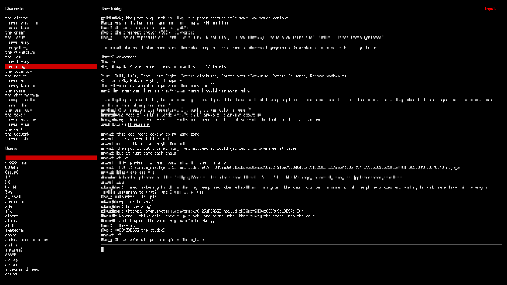
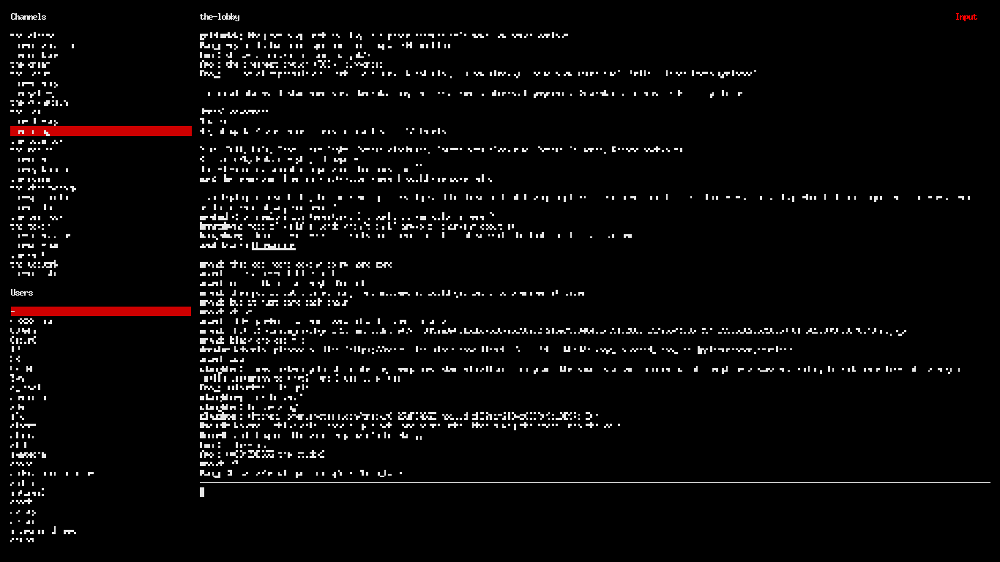

6I2–6I2 2.07 1.50V 0.57D
Stack is a CLI Slack client forked from Evan Yeung's client, featuring minor design improvements and mouse scroll capabilities. This requires a Slack Legacy Token.
Stack is a CLI Slack client forked from Evan Yeung's client, featuring minor design improvements and mouse scroll capabilities. This requires a Slack Legacy Token.
